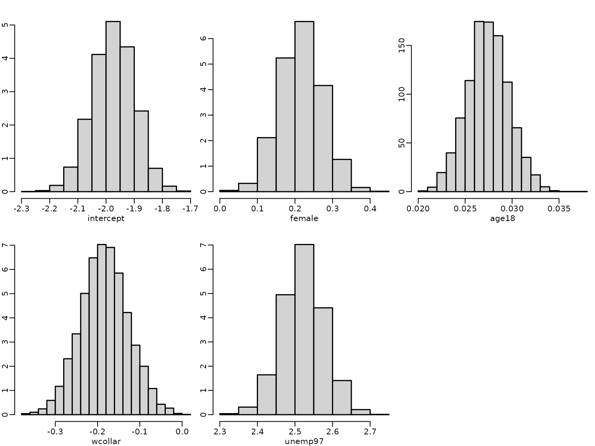
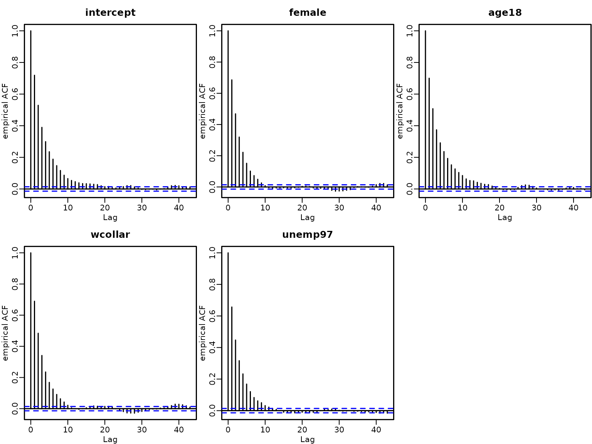
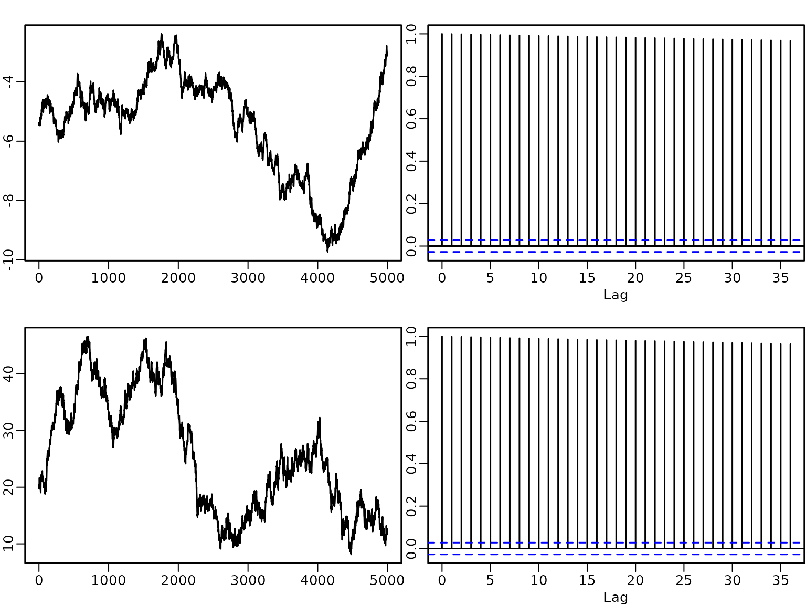
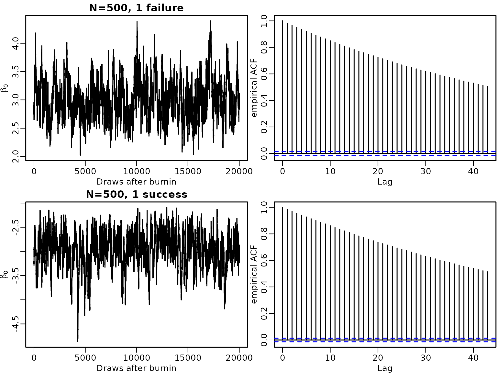

Chapter 8: Bayesian Learning Beyond Standard Regression Analysis
Chapter08.RmdSection 8.1.1: Probit Model
Example 8.1: Labour Market Data
We illustrate probit regression analysis for the labor market data.
library("BayesianLearningCode")
data("labor", package = "BayesianLearningCode")We model the binary variable unemployment and use as covariates the variables female (binary), wcollar (binary), age18 (quantitative, centered at 18 years) and unemployed in 1997 (binary). The baseline person is hence an 18 year old male blue collar worker who was employed in 1997.
y.unemp <- labor$unemp98
N.unemp <- length(y.unemp) # number of observations
X.unemp <- cbind("intercept" = rep(1, N.unemp), "female"=labor$female,"age18"=labor$age-18,
"wcollar"=labor$wcollar, "unemp97"=labor$unemp97) # regressor matrixThe regression coefficients are estimated using data augmentation and Gibbs sampling. We define a function yielding posterior draws using the algorithm detailed in Chapter 8.1.1.
probit <- function(y, X, b0 = 0, B0 = 10000,
burnin = 1000L, M = 5000L) {
N <-length(y)
d <- dim(X)[2] # number regression effects
p <- d - 1 # number of regression effects without intercept
B0.inv <- diag(rep(1/B0, d), nrow = d)
b0 <- rep(0, d)
B0inv.b0 <- B0.inv%*%b0
betas <- matrix(NA,nrow=M, ncol=d)
# define quantities for the Gibbs sampler
XX <- crossprod(X)
BN <- solve(B0.inv + XX)
ind0=(y==0) # indicators for zeros and ones
ind1=(y==1)
# starting values
beta <- rep(0,d)
z <- rep(NA_real_,N)
for (m in seq_len(burnin+M)) {
# Draw z conditional on y and beta
u <- runif(N)
eta <- X %*% beta
pi<- pnorm(eta)
z[ind0] <- eta[ind0] + qnorm(u[ind0]*(1-pi[ind0]))
z[ind1] <- eta[ind1] + qnorm (1-u[ind1]*pi[ind1])
# sample beta from the full conditional
bN <- BN %*% (B0inv.b0 + t(X) %*% z)
beta <- t(mvtnorm::rmvnorm(1, mean = bN, sigma = BN))
# Store the beta draws
if (m > burnin) {
betas[m-burnin, ] <- beta
}
}
return(betas)
}We specify the prior on the regression effects as a rather flat independence Normal prior.
betas <- probit(y.unemp,X.unemp,b0=0, B0=10000)
res.mcmc <- function(x, lower = 0.025, upper = 0.975)
c(quantile(x, lower), mean(x), quantile(x, upper))
res_beta<- t(apply(betas,2, res.mcmc))
colnames(res_beta) <- c("2.5%", "Mean", "97.5%")
rownames(res_beta) <- colnames(X.unemp)
knitr::kable(round(t(res_beta),3))| intercept | female | age18 | wcollar | unemp97 | |
|---|---|---|---|---|---|
| 2.5% | -2.124 | 0.107 | 0.023 | -0.293 | 2.409 |
| Mean | -1.974 | 0.217 | 0.027 | -0.183 | 2.521 |
| 97.5% | -1.829 | 0.327 | 0.032 | -0.071 | 2.631 |
(p_unemploy_base=pnorm(res_beta[1,2]))
#> [1] 0.02420442The estimated risk of unemployment for a baseline person is low and it is even lower for a white collar worker. It is higher for females, older persons and particularily for those unemployed in 1997.
par(mfrow = c(2, 3), mar = c(2.5, 1.5, 1.5, .1), mgp = c(1.5, .5, 0), lwd = 1.5)
for (j in seq_len(ncol(X.unemp))) {
hist(betas[, j], freq = FALSE, main = "",
xlab = colnames(X.unemp)[j], ylab = "")
}
A plot of the autocorrelation of the draws shows that although there is some autocorrelation, it vanishes after a few lags.
par(mfrow = c(2, 3), mar = c(2.5, 1.5, 1.5, .1), mgp = c(1.5, .5, 0), lwd = 1.5)
for (j in seq_len(ncol(X.unemp))) {
acf(betas[, j],main = "", xlab = colnames(X.unemp)[j], ylab = "")
} The sampler is easy to implement, however there might be problems when
the response variable contains either only few or very many successes.
To illustrate this issue, we use data where in N=500 trials only 1
success or only 1 failure is observed.
The sampler is easy to implement, however there might be problems when
the response variable contains either only few or very many successes.
To illustrate this issue, we use data where in N=500 trials only 1
success or only 1 failure is observed.
N=500
X <- matrix(1,nrow=N)
y1=c(0, rep(1,N-1))
betas1 <- probit(y1,X,b0=0, B0=10000)
y2=c(rep(0,N-1),1)
betas2 <- probit(y2,X,b0=0, B0=10000) In both cases the autocorrelation of the draws decrease very slowly.
plot(betas1,type="l", main = "", xlab = "", ylab = "")
acf(betas1)
plot(betas2,type="l", main = "", xlab = "", ylab = "")
acf(betas2) High autocorrelated draws in probit models not only occur if successes or failures are very rare, but also when a covariate (or a linear combination of covariates) perfectly allows to predict successes and/or failures. Complete seperation means that both successes and failures can be perfectly predicted by a covariate, whereas with quasi-complete seperation only either successes or failures can be predicted perfectly.
To illustrate posterior sampling, in the case of complete seperation, we simulate observations with 10 successes and 490 failures. We add a binary predictor where for we observe only successes and for only failures.
N <- 500
ns <- 10
x<- c(rep(1,ns),rep(0,N-ns))
y <- c(rep(1,ns),rep(0,N-ns))
table(y,x)
#> x
#> y 0 1
#> 0 490 0
#> 1 0 10We estímate the model parameters and plot the acf of the draws. Again the autocorrelations remain high even for lag 35.
betas=probit(y, X,b0=0, B0=10000)
par(mfrow = c(2, 2), mar = c(2.5, 1.5, 1.5, .1), mgp = c(1.5, .5, 0), lwd = 1.5)
plot(betas[,1], type="l", main = "", xlab = "", ylab = "")
acf(betas[,1])
plot(betas[,2], type="l", main = "", xlab = "", ylab = "")
acf(betas[,2]) Finally we simulate another data set of observations with 10 successes and 490 failures. In this data for only successes but for successes as well as failures are observed and hence there is quasi-seperation.
N <- 500
x <- c(rep(1,ns),rep(0,N-ns))
y <- c(rep(1,N/2),rep(0,N/2))
table(y,x)
#> x
#> y 0 1
#> 0 250 0
#> 1 240 10A plot of the acf of the draws shows low autocorrelation for the intercept but autocorrelations for the covariate effect are again high.
betas=probit(y, X,b0=0, B0=10000)
par(mfrow = c(2, 2), mar = c(2.5, 1.5, 1.5, .1), mgp = c(1.5, .5, 0), lwd = 1.5)
plot(betas[,1], type="l", main = "", xlab = "", ylab = "")
acf(betas[,1])
plot(betas[,2], type="l", main = "", xlab = "", ylab = "")
acf(betas[,2])
High autocorrelations typically indicate problems with the sampler.
If there is complete or quasi-complete seperation in the data the
likelihood is monotone and the MLE does not exist. In a Bayesian
approach using a flat, improper prior on the regression effects will
result in an improper posterior distribution. Hence a proper prior is
required to avoid improper posteriors in case of seperation. In the
examples above we used a rather proper prior which is rather flat. With
a more informative prior, the autocorrelations of the draw are
lower.
This can be seen in the next figure, where the simulated data under
quasi-seperation are re-analysed with a Normal prior that is tighter
around zero.
par(mfrow = c(2, 2), mar = c(2.5, 1.5, 1.5, .1), mgp = c(1.5, .5, 0), lwd = 1.5)
plot(betas[,1], type="l", main = "", xlab = "", ylab = "")
acf(betas[,1])
plot(betas[,2], type="l", main = "", xlab = "", ylab = "")
acf(betas[,2])
Section 8.1.2
We now estimate a logistic regression model for the labor market data using the two-block Polya-Gamma sampler.
install.packages("pgdraw",repos = "http://cran.us.r-project.org")
#> Installing package into '/home/runner/work/_temp/Library'
#> (as 'lib' is unspecified)
logit<- function(y, X, b0 = 0, B0 = 10000,
burnin = 1000L, M = 5000L) {
N <-length(y)
d <- dim(X)[2] # number regression effects
p <- d - 1 # number of regression effects without intercept
B0.inv <- diag(rep(1/B0, d), nrow = d)
b0 <- rep(0, d)
B0inv.b0 <- B0.inv%*%b0
betas <- matrix(NA,nrow=M, ncol=d)
# define quantities for the Gibbs sampler
ind0=(y==0) # indicators for zeros and ones
ind1=(y==1)
# starting values
beta <- rep(0,d)
z <- rep(NA_real_,N)
omega <-rep(NA_real_,N)
for (m in seq_len(burnin+M)) {
# Draw z conditional on y and beta
eta <- X %*% beta
pi<- plogis(eta)
u <- runif(N)
z[ind0] <- eta[ind0] + qlogis(u[ind0]*(1-pi[ind0]))
z[ind1] <- eta[ind1] + qlogis (1-u[ind1]*pi[ind1])
# Draw omega conditional on y, beta and z
omega <- pgdraw::pgdraw(b = 1, c = z-eta)
# sample beta from the full conditional
Xomega <- matrix(omega,ncol=d, nrow=N) *X
BN <- solve(B0.inv + t(Xomega)%*%X)
bN <- BN %*% (B0inv.b0 + t(Xomega)%*% z)
beta <- t(mvtnorm::rmvnorm(1, mean = bN, sigma = BN))
# Store the beta draws
if (m > burnin) {
betas[m-burnin, ] <- beta
}
}
return(betas)
}We again use the flat independence Normal prior on the regression effects and estimate the model.
betas_logit <- logit(y.unemp,X.unemp,b0=0, B0=10000)
print(str(betas_logit))
#> num [1:5000, 1:5] -3.81 -3.73 -3.69 -3.72 -3.62 ...
#> NULL
res_beta_logit<- t(apply(betas_logit,2, res.mcmc))
colnames(res_beta_logit) <- c("2.5%", "Mean", "97.5%")
rownames(res_beta_logit) <- colnames(X.unemp)
knitr::kable(round(t(res_beta_logit),3))| intercept | female | age18 | wcollar | unemp97 | |
|---|---|---|---|---|---|
| 2.5% | -4.069 | 0.090 | 0.044 | -0.613 | 4.102 |
| Mean | -3.673 | 0.394 | 0.056 | -0.342 | 4.380 |
| 97.5% | -3.284 | 0.692 | 0.068 | -0.060 | 4.664 |
(p_unemploy_base=plogis(res_beta_logit[1,2]))
#> [1] 0.02477852Note that the logistic distribution has a variance of
and hence the regression effects are absolutely larger than in the
probit model. However any probability computed from the two models will
be very close, compare the
probability to be unemployed for a baseline person.
We can compare the posterior estimates of the coefficients in the probit model those of of logit model by multiplying them with and see that there is not much difference.
| intercept | female | age18 | wcollar | unemp97 | |
|---|---|---|---|---|---|
| 2.5% | -3.852 | 0.195 | 0.042 | -0.532 | 4.370 |
| Mean | -3.580 | 0.393 | 0.050 | -0.332 | 4.573 |
| 97.5% | -3.318 | 0.592 | 0.058 | -0.129 | 4.772 |
Section 8.2
Example 8.3: Road Safety Data
#small model with intercept, intervention effect and holiday dummy (activated in #July/August) # large model with intercept, intervention effect, linear trend, seasonal pattern #with monthly dummies in # Study how the acceptance rate detoriates, if d increases. ADD
We load the data and extract the observations for the children in Linz. Then we define the regressor matrix.
data("accidents", package = "BayesianLearningCode")
y <- accidents[, "children_accidents"]
N <- length(y)
e=rep(1,N)
# Define regressors
intercept=rep(1,N)
intervention <- c(rep(0,7*12+9),rep(1,8*12+3))
holiday <- rep(c(rep(0,6), rep(1,2), rep(0,4)),16)
X <- cbind(intercept,intervention, holiday)
d<- ncol(X)We use a flat Normal prior on the regression effects.
To compute the parameters of the Normal proposal density we use the Newton-Raphson estimator described in Section 8.2.1.
gen.proposal.poisson <- function(y,X, t.max=30){
d<-ncol(X)
betas=matrix(NA, ncol=t.max, nrow=d)
beta.old <- c(log(mean(y)),rep(0,d-1))
for (t in (1:t.max)){
rate <- e*exp(X%*%beta.old)
score <- t(crossprod(y-rate,X)-(beta.old-b0)%*%B0.inv)
H <- -B0.inv
for (i in (1:N)){
H <- H - rate[i]*tcrossprod(X[i,])
}
betat <- beta.old- solve(H)%*%score
betas[,t] <- betat
}
qmean<-betas[,t.max]
# determine the variance matrix
rate <- e*exp(X%*%qmean)
H <- -B0.inv
for (i in (1:N)){
H <- H - rate[i]*tcrossprod(X[i,])
}
qvar <- -solve(H)
return(parms.proposal=list(mean=qmean,var=qvar))
}
parms.proposal<- gen.proposal.poisson(y,X)
print(parms.proposal$mean)
#> [1] 0.8867173 -0.3465599 -0.5944486
print(parms.proposal$var)
#> [,1] [,2] [,3]
#> [1,] 0.005121126 -0.0048204767 -0.0031235498
#> [2,] -0.004820477 0.0111451181 0.0002039249
#> [3,] -0.003123550 0.0002039249 0.0303637113Next we set up the independence Metropolis Hastings algorithm and estimate the model parameters.
install.packages("mvtnorm",repos = "http://cran.us.r-project.org")
#> Installing package into '/home/runner/work/_temp/Library'
#> (as 'lib' is unspecified)
poisson <- function(y, X, b0 = 0, B0 = 100,qmean,qvar,
burnin = 1000L, M = 5000L){
d<-dim(X)[2]
beta.post=matrix(ncol=d,nrow=M)
acc=0
beta<-as.vector(mvtnorm::rmvnorm(1, mean=qmean, sigma=qvar))
for (m in (1:M)){
beta.old <- beta
beta.proposed <- as.vector(mvtnorm::rmvnorm(1, mean=qmean, sigma=qvar))
# compute log proposal density at proposed and old value
lq_proposed <- mvtnorm::dmvnorm(beta.proposed,mean=qmean, sigma=qvar, log=TRUE)
lq_old <- mvtnorm::dmvnorm(beta.old, mean=qmean, sigma=qvar, log=TRUE)
# compute log prior of proposed and old value
lpri_proposed <- mvtnorm::dmvnorm(beta.proposed, mean=b0, sigma=B0, log=TRUE )
lpri_old <- mvtnorm::dmvnorm(beta.old, mean=b0, sigma=B0, log=TRUE )
# compute loglikelihood of proposed and old value
lh_proposed <- dpois(y,exp(X%*%beta.proposed), log=TRUE)
lh_old <- dpois(y,exp(X%*%beta.old), log=TRUE)
maxlik <- max(lh_old,lh_proposed)
ll <- sum(lh_proposed-maxlik)-sum(lh_old-maxlik)
# compute acceptance probability and accept or not
log_acc <- min(0,ll+lpri_proposed-lpri_old+lq_old-lq_proposed)
if (log(runif(1)) < log_acc){
beta <- beta.proposed
acc[m+1] <- 1
}else {
beta <- beta.old
acc[m+1] <- 0
}
beta.post[m,] <- beta
}
return(res=list(beta.post=beta.post, accept=mean(acc)))
}
res1<-poisson(y,X, b0,B0 ,qmean=parms.proposal$mean,qvar=parms.proposal$var)
res.poisson1<- t(rbind(apply(res1$beta.post,2, res.mcmc),exp(colMeans(res1$beta.post))))
colnames(res.poisson1) <- c("2.5%", "Mean", "97.5%", "exp(Mean)")
rownames(res.poisson1) <- colnames(X)
knitr::kable(round(res.poisson1,3))| 2.5% | Mean | 97.5% | exp(Mean) | |
|---|---|---|---|---|
| intercept | 0.742 | 0.867 | 0.997 | 2.379 |
| intervention | -0.528 | -0.358 | -0.153 | 0.699 |
| holiday | -1.193 | -0.835 | -0.441 | 0.434 |
print(res1$accept)
#> [1] 0.3139372We then fit an alternative model with intercept, intervention effect, linear trend and saisonal dummy variables.
seas <- rbind(diag(1,11), rep(-1,11))
seas.dummies <-matrix(rep(t(seas),16),ncol=11,byrow=TRUE)
colnames(seas.dummies) <- c("Jan", "Feb", "Mar", "Apr","May", "Jun", "Jul",
"Aug", "Sep", "Oct", "Nov")
lin.trend <-(1:length(y))
X.large <- cbind(intercept, intervention, lin.trend,seas.dummies)
d <- dim(X.large)[2]We set the prior parameters and compute parameters of the proposal distribution
b0=rep(0,d)
B0 <- diag(rep(100, d), nrow = d)
B0.inv<- diag(rep(1/100, d), nrow = d)
parms.proposal2<- gen.proposal.poisson(y,X.large)
#print(parms.proposal2$mean)
#print(parms.proposal2$var)and fit the model.
res2<-poisson(y,X.large,b0,B0,
qmean=parms.proposal2$mean,qvar=parms.proposal2$var)
res.poisson2<- t(rbind(apply(res2$beta.post,2, res.mcmc),
exp(colMeans(res2$beta.post))))
colnames(res.poisson2) <- c("2.5%", "Mean", "97.5%", "exp(Mean)")
rownames(res.poisson2) <- colnames(X.large)
knitr::kable(round(res.poisson2,3))| 2.5% | Mean | 97.5% | exp(Mean) | |
|---|---|---|---|---|
| intercept | 0.470 | 0.675 | 0.933 | 1.964 |
| intervention | -0.789 | -0.333 | 0.058 | 0.717 |
| lin.trend | -0.003 | 0.000 | 0.004 | 1.000 |
| Jan | 0.010 | 0.305 | 0.545 | 1.356 |
| Feb | -0.730 | -0.371 | 0.008 | 0.690 |
| Mar | -0.290 | 0.148 | 0.497 | 1.159 |
| Apr | -0.017 | 0.339 | 0.598 | 1.403 |
| May | -0.654 | -0.224 | 0.124 | 0.799 |
| Jun | 0.126 | 0.431 | 0.692 | 1.539 |
| Jul | -0.993 | -0.611 | -0.139 | 0.543 |
| Aug | -1.158 | -0.682 | -0.229 | 0.505 |
| Sep | -0.318 | 0.016 | 0.389 | 1.016 |
| Oct | 0.200 | 0.441 | 0.700 | 1.555 |
| Nov | -0.253 | 0.046 | 0.438 | 1.047 |
print(res2$accept)
#> [1] 0.1841632
# xtable(res.poisson1, caption= "Count Data: estimation results for Model 1", label="res.count1", digits=3)
# xtable(res.poisson2, caption= "Count Data: estimation results for Model 2", label="res.count2", digits=3)```